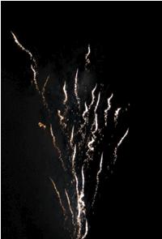

たまには欲情してみたいものですね。
なんか日記サイトを 3 つも運営しているようなかたちになってしまっているのですが、本家ではある程度きちんとした文章を、あややではぐだぐだなことを書くということになっているので、そしたらこっちではなにを書けばいいんだろう。エロ小説でも書こうか。普通に引きまくるようなエグい描写満載で。でも、ジュンさんみたいに文才があるわけでもないしなぁ。
うむぅ。ネタサイトとはいえ一応立ち上げてしまったからにはなにかやらないといかんですね。というわけで、土日はすこしばかりそのあたりを考えてみましょう。
エロ小説を書こうと思いきや、土日は仕事で休みなしなのでした。エロ小説を書く程度の余裕すら従事者に与えない職場ってどうよ？ 妄想を解放することができずに、勤務中にむらむらむらむらむらむらしたらどうするのよ？
まぁ、欲望なんてないですけどね。単に面白そうだからやるというだけで。
こちらでも花火写真を。

花火ってほんとは生きているんじゃないか、と思わされるような「生命の息吹」と呼ぶべき活力をこの写真から感じ取ることができるのではないでしょうか。
うー、新スタ案、思い浮かばないです…。つか、画像がない。
エロ小説の構想を練ったのに、PHP のせいで書く暇がありません。
怪しげな計画を友人に持ち込まれて、ちょっと乗ってみたくもありつつ。エロ、なのかも？ よくわかりませんが、面白そうです。
てな感じで、心変わりしまくっているわけです。今日もやっぱり欲情からほど遠いいちにちでした。
自分の欲望にはもう関心がないです。他人の欲望を欲望することこそが楽しい。って、ルネ・ジラールですか？ 欲望の三角形ですか？ 違いますよ。
欲望の三角形なんてはなから不可能であるからこそ、他人の欲望を欲望することが楽しいのです。独り遊びですね。うふふ。
こちらがわざわざ読み込んであげないとなんの面白みもないドキュソばかりなので。田舎はイヤです…。
ここを更新する時間的な余裕がないんですけど、まぁ、またーりいきましょう。PHP 楽しすぎる。
今日の湾岸日記 経由で幼女のあられもない姿を拝見しました。ペドの友人のために保存しといた。と書くと、「おまえの趣味なんだろ（ｗ 」とかいわれそうですが、別にそういう趣味はありません。
疲れ果ててるので例によって論証抜きで断定しますが、いまのようなやり方で子供ポルノを取り締まるは異常。つか、刑事罰の課罰対象を引き下げるとかいいつつ、保護という名のパターナリズム（断じて悪い意味での）が幅を利かせることに対して、論理的な矛盾を感じない精神は基地外。
ペドフィリアどもを取り締まっといて、その脇ではああいう映像を公に流すダブル・スタンダード（ですらないか）こそが犯罪なのですよ。
元々、どの国でもチャイルドポルノの取り締まりは、子どもの権利のためにやっているのに、この国では子供の人権という発想が、人権屋の間にも普及していないようです。どちらかというと倫理がどうとか外圧がどうということで、児童ポルノを取り締まっている面がある。
つまり、子供を法律によって過剰に「保護」しようという考え方に反対します。その「子供」というのをどのあたりで線引きするかってのが問題なわけですがそれはとりあえず置いといて、裸の子供を TV で放映することになんの違和感も感じない社会でチャイルド・ポルノを取り締まることになんの意味があるのか。
あ〜、エロとは関係ないですけど、ちょっと。
『あずまんが大王』を友人に貸したら、ハマったみたい。最初は、「ヲタクがそれ読んで『 〜 ちゃん萌えー』とかいうんだろ？ きめーよ」なんていってたくせに、です。で、その友人ってのはここの日記でたびたび登場する炉なひとなんですけど、案の定ちよちゃん一発で擁護派に、というよりもむしろ信者になった模様。
僕も、そういう方面に不案内なものですから彼と似たような先入見を持っていたのですが、いまでは DVD ボックスが出たら絶対買おう、と決意しているぐらいです（本物のヲタクさんから見れば甘いでしょうが）。で、僕は「暦派」なので、昨夜は彼と一晩中論戦していたのですが、そのせいか、今日ガシャポンで暦が 3 個連続で出てきました。
もうすでに、5 個目なんですけど…。
あややを食べたいです。
やっぱり、モテるか否かは人生において重要なことなんですかね。うむ。
お金が欲しいですよ、なによりも。もっと欲しいのは、お金では買えないものですよね。てきぱき動く頭脳とか、なんでも記憶できる頭脳とか、とにかく最強の頭脳とか。
ちょっとお疲れ気味です。つか、エロ・サイドの存在意義がどんどん薄れているような気がします。新スタ書かなきゃ〜。しかし、それどころではないのであった。
エロ小説を書こうと試みたのですが、エロではない上に、意味不明な文章になってしまって、出だししか書いてないのに放り投げちゃいました。でもまぁ、せっかくなのでうぷします。
スウィングする身体をおちつかせようという気は既になくて、というよりもむしろ諸感覚の変調にすすんで身をまかせてしまっているいまとなっては、フロアの木目がゆらゆらと伸び盛っていくさまや、テーブルからこぼれ落ちつつあるワインがやがては黄緑色のつぶつぶとなって砕け散り、部屋全体をぱらぱらと充たしていくさまをただぼんやりと眺めているのが楽しくて、ともすれば僕がその腿に頭を横たえている彼女の存在を忘れてしまいそうになる。
体を向きなおして彼女をじーっと眺めてみる。ちちち…ちち…と顔全体が小刻みに振動し、髪の毛がどんどん桃色に染まっていく。僕の手が伸びて彼女の髪をなでる。はじめ、遠慮がちに指先をちょろちょろとかすめては撤退し様子をうかがっていた桃色の髪の毛たちは、僕の指が、腕がふぅっふぅっと震えるのを感じ取って、いまではわさわさと巻き付いては毛穴から潜り込んできて皮膚を内側からまさぐったりするので、我慢できずに僕の体は裏返ってしまう。
ねぇ、ヤバいよ、そうだね、ヤバいね、おなじやりとりのくりかえし。お互いを腰のあたりからぐるぐるに取り巻きながら、ぎらぎらに輝くどろどろした液体を穴という穴から噴出させながら。ヤバ、ヤバ。ね。ねぇ。どちらからともなくずれ落ちていき、ずれ落ちていく動きにあわせて身体の領分も広がっていくせいで、体がぐなぐなになってほどけなくなってしまう…（続く）
…延々こんな調子なんですけど、どうですか？ 読みたいですか？ 僕は書きたくないです。
デジカメ買ったからにはとりあえず ハメ撮り っしょ！ しかし、相手がいねぇ…このままでは宝の持ち腐れだ、猫なんて撮っている場合ではないのに…とデジカメ買ってからこの方ずっと気にかかっていたのですよ。
僕は外出するときは必ずカメラを持って出かけるのですが、かといってぱしゃぱしゃ撮りまくるわけではありません。つか、ほとんど起動することすらないので、一緒にいる友人が「じゃぁ、なんのためにカメラ持ち歩いてんのよ？」なんて無粋なことを訊くわけですよ。もちろん僕はこういうさ。
「男子たる者、いついかなる時も不測の事態に対処できるよう日頃から心身を準備万端整えておかねばならないのだ。つまりは、いつでも ハメ撮るぞ という決意の顕れ…！」
…というわけで、デジカメ下げて街中をぶらついている男は皆ハメ撮りのことしか頭の中にはないのです。気をつけようヽ(´ー`)ノ
友人たちがふたりしておもむろに小学校の卒業アルバムを開いて眺めているのです。ふ〜ん、懐かしいね、と思ってると「やっぱり 〜 ちゃんはかわいいよなぁ、まさに美少女そのものだよ！ この時代に戻りたいなぁ」なんていってるわけですよ。
このロリペド野郎どもがっ！
とはいえ、卒業アルバムってのは、アレ、かなりヤバい一品ですよね。セキュリティ意識の甘い学校が発行するアルバムなんて、住所・電話番号ともに記載されちゃってます。おそらくそういう方面では高値で取引されたりしているのでしょうね。「平成 3 年度卒業生、それも新潟北部地域、コレ最強」とかいって。
なんか、みなさん、このサイトのことをあややサイトだと思ってらっしゃるみたいなので、エロスタを一個追加しました。とはいえ、相変わらずエロくないですけど。
かなーり適当なので、表示がおかしいかも知れないですが、まぁいいでしょう。
CD 棚を漁っていたら「宅配コギャル」とかいう mpeg ファイルの入った CD-R を発見しました！ なんですかコレは？ ちょっと観てみましょうか。
エロい動画だったらどうしよ〜。ビクビク。
「宅配コギャル」はエロ動画でした！ 純真なけんたろたんにあんなみだらなものを見せるなんて、ひどいや。みんな、気をつけて！ 狼が来るよ!!
つか、普通にどうでもいいですね。実際、見ないし。必要ないので。
というわけで、ソニン の「カレーライスの女」を買いました。ま、曲はどうでもいいんですけど。
と、ここで お笑いパソコン日誌 で紹介されていたソニンのエロ flash へのリンクを張りたかったんですけど、なんか 403 forbidden になっちゃてて見ることができません。ローカルには保存してあるんですけど。つか、あれ、マジでヤバすぎますよ！ 阿呆のようにひたすらマウス・クリック、ぽよんぽよよん、マウス・クリック、ぽよんぽよよん、マウス・クリック、ぽよんぽよよんぽよん（エンドレス
しかたがないので、nikkansports.com のヤバ写真へのリンク を。うむ〜。(・∀・)イイ！
[追記] サル並日記 にて、ソニンの新たなる（？）エロ flash が紹介されていました。ので、ここでもリンク しちゃいます。わぉ！
ねずみさんが言及しているので 画像を増やしてみる。それぞれのページに違う画像を配しました（@デフォルトのエロスタ）。しかし、多分ネタ元は同一のところだと思われ。うむ〜。手抜きくさい。
テーマは…まぁ、ねぇ。察してください。つか。好きです。
乳が(・∀・)イイ！ とはいえない？
というか今日も買いものに行った以外は PC に向かって過ごすいちにちだったのでありまして、欲情的なできごとがおこらないのは当前のことで。とはいえ、買いものに行った先の家電屋さんの店員にかわいい女の子がいて、実は僕、その子に好かれているんですよ。だって、僕が入店したらかならず「いらっしゃいませ」っていうもの。
…という話を友人に聞かせたら、くすっとも笑わずに「一日中ネットして、たまに外出したかと思えば妄想か…哀れだな」と。
世の中昏いですね。彼のようにひとの好意を素直に受け止めることのできない心のひねくれたひとばかりです。どうしてもっと分かり合おうとしないのでしょうか？ ひとの心の美しさをもっと信じてもいいと思いますね、本当に。
早晩あの子に告白されることになるので、そしたら毎日楽しく暮らしてサイトを更新する暇なんかなくなるでしょうから、このサイトは即閉鎖ですね。まあ、かわいい女の子のためとあらばそれもしかたがないことだと思います。
今日は久しぶりに外出してライブへいってきました。まぁそのこと自体はどうでもいいんですけど、事件が起こったんですよ！
ある女の子に一目惚れしました。タンクトップのなめらかな布地が柔らかく包むその胸はえもいわれず豊かで、薄い眼鏡がそこはかとない知性をかもしだしている美女。まさに、夢。夢の萌え萌えおっぱいちゃん（しかもメガネっ娘）ですよ！
が、その子の素性をまるで知らないんですよね。いつの間にかライブ会場からいなくなっていたし。いや、僕は絶対に見つけ出しますよ。そしてコクりますよ。あなたの胸で泣かせてください、この哀しみを癒せるのはあなたしかいない、と。
というか、好きです！ ここに宣言してしまったからにはあなたは僕に yes/no を問わず答えなければならない。つか、あなたは僕とつき合っています。既成事実です。この超有名サイト「あんちぽっぷ」で宣言されたからには、すでに世界中のひとに知られた事実になってしまっているのですよ！
いや、今回ばかりはネタではなくてマジです。好きです。
というか、皆さん僕のことをデムパだと思ってらっしゃるのでは？ 違いますよ、もちろん。僕はラディカル・フェミニストなので 夢の萌え萌えおっぱいちゃん
なんていう表現を絶対に許しませんよ、糾弾・罵倒しますよ、他人がいったのならば。もちろん常識人なのでストーキング的な行為に及んだりはしません。単に、僕が彼女に値するというか彼女こそ僕にふさわしい女性であるから昨日の記述を書いたまでです。
つーか、まぁそんなことはどうでもいいです。今日はエロいことなんて考えている余裕はありません。詳細はあやや日記の方で。
メディア漬けのドキュソ・ヒッキー人生を苦にするべきではない。というか、中途半端なドキュソこそ軽蔑さるべきだ。
ごめんなさい。このサイトを更新する余裕がないです〜。
と思ったけどちょっとだけ書こう。
明日は台風最接近の日。狙ったわけではないが、仕事は夏休みでお休みです。うひゃ。「盆休み」なんて優雅な風習とはまるで縁のないお仕事ぶりだったので、許されてもいいはず。というか、台風 15 号はこっちにまっすぐつっこんできています。ヤバい。明日はいちにち antipop サーバの監視に当たらないとなりませんね。まぁ、台風じゃなくてもひねもす PC の前にすわっているんですけどね。
つか、エロと全く関係ないなぁ。こっちサイドではエロというかセクシュアリティに関わることについて書くことになっているのですが。
はうぅ〜。
というか最近は女の子の肌ばかり見ているのがオヤジくさくてやだ。肌、といっても露出しているかどうかはどうでもいいし、顔でも腕でも足でもどこでもよくて、とにかく撫でまわしたら楽しそうかどうかというのが魅力的かどうかを決めるのだけど、そうなるとやはり若い子に目がいってしまい、中でもやはり高校生ぐらいの年頃が最も完成度が高いように思えるのです。寝入っている肌のきれいな女の子をひねもす撫でまわしたいなぁ、なんてことをひねもす PC に向かいつつ考えていたのですが、それって川端康成の「眠れる美女」だよなぁ。いいなぁ。そういう宿、どこかにないですか？ ホテルとかじゃなくて「宿」。
いやもう本当に女の子のことはどうでもいいです。全然興味ないし。「モテ」とかもどうでもいい。モテなくてかまわないです、心の底から。エロティックな官能は、メディアや脳内にしか存在しません。「この電波リーマンが！」と罵倒されたところで、僕はなにも感じません。世の中には本当に悲惨な地域があって、僕をそのように罵倒するひとはそういう現実を知らないだけなのです。僕の周囲 100 キロ四方には、男も女もドキュソしかいません。これは僕の思い上がりから来る悲観的な認識などでは断じてない。僕は現実を直視している。そしてそれをまるごと受け入れているので、脳内の官能に満足するしかないのです。
お疲れ気味ですかぁ|ﾟ∀ﾟ)ノ
ドキュソを人間として認めないことにしました。
僕はひとがいいのかドキュソに対しても暖かな眼差しを投げかけていたようで、そのせいで今日はひどい目に遭いました。殺意 殺意 殺意ですよ。嘘です。ただひたすら疲れました。
というわけで 8 月。新画像を配しました（過去ログの 8 月日記の方ね）。
というわけで未納の 500 円を払うついでにまたコーヒーを飲みつつってな感じですよ。
今日は花火大会があるんですけど、多分お仕事でろくに見ることができなさそうです。つか、その花火大会もコンテンツのひとつであるウチの地元の夏祭り、というか一般に「祭」という野蛮な風習の存在自体を否定したい気持ちでいっぱいですよ。あんなものはやりたいやつが勝手に騒げばいいのであって、土人の習俗を他人に押し付けるのは止してほしい。
僕が「自由」というのはそういう単純な話で、いまや古典的な（それは必ずしも実践されている或いは古びていることを意味しているわけではない）価値観ですが「とりあえず他人に迷惑をかけない」という世の中がいいよね、ということなのです。そしてそういう世の中は実際はものすごく「不自由」なのだと思う。しかしそれでいいではないか。他人に意味不明な価値観を押し付けられるよりは、「不自由」を僕は自ら選ぶ。
ここのサイトをどのように本家からリンクさせたらよいのでしょう。というか、php のお勉強がなかなか進みません。本に書いてあるとおりにやっているはずなのにできないのはなぜなのか。難しいですね。
あんなのをぱしぱしできちゃうひとは頭の作りが違うのかしらん。茫洋と生きていたら、最近はとみに頭が悪くなっている気がします。
あややとかエロ関連のプログラム企画を思いつけば、むやみやたらなやる気が出て瞬く間に上達したりするのかな。
妹ブーム、なんですか？ よくわかんないけど、面白そうですね。つか、すごい語感ですよね。妹がブームって…。意味不明。僕には妹が 3 人いますけど、そういうのとはまた違うんでしょうねぇ。「おにいちゃん…（はあと」みたいなことをいわれたことないし、いわれたくもないし。
なんかほんとにだらだら書いてますけど。
友人のペドのひとが、書店でいつものように少女向けファッション誌を買おうとしたら、いかにもなステロタイプにヤバいおっさんが同じものを手にしていて「俺は周りから見たらこいつと同じ人種なんだ」と思って鬱った、と語っていました。
まぁなんにせよ、格好に対する自覚はそれなりに必要だと思いますね。
とはいえ僕は「自覚」なんてどうでもいいことだと思ってますけど。自覚すべきことを自覚することなんてひととして真っ当に生きていればそうしているのがあたりまえのことで、そんなことをいつまでもうだうだ考えていても意味ないなぁと。
といういいわけを根拠に今日も明日も茫洋と生きるわけですよ。
今日はハブになりました（村八分にされた、ということではありません）。氏ね。以上。
というわけで帰りしな、CD 屋さんでお兄さんとあややについておしゃべりしてきました。ルックスがすばらしいのはいうまでもないことなのですが、それも含めてプロダクトとしての「松浦亜弥」の完成度の高さ、無駄の無さがすばらしいという話をしました。プロダクトとして、というのは「アイドル・ロボット」といった文脈にも関係がないわけではないですが、むしろ宇多田ヒカルがすばらしいというのと同じ意味であややは素晴らしいと思うわけですよ。てか、自意識がそこに介在しない（ように見える）あややの方が、工業製品として無駄がなくていいかも。
美しいあややを見てうっとりするだけの心の余裕があるうちは、幸せに生きていけるのだ、とは思いませんけど…。
つか僕は、自分で思っている以上に頭が悪いのだろう。鬱い…。
ぐなぐな、な気分です…。
あ、今日、久しぶりにまともにきれいな女性を見ました。感動しました。
ダメだ…。
昨日の記述を書いた時点では鬱気分でしたが、その後、心の美しい方々のおかげで PHP のページが動くようになって、いまはテンション高いです。あはははは。
つか、本家にネタを盗られた！
あやや DVD を観てにやにやしている自分を省みて、キモいとオモタ。
雑用に追われてへろへろになっています。つか、PHP のせいでここんとこ 3 〜 4 時間睡眠で暮らしているので、激しく眠い。
そろそろその程度のことはおぼたらどうなのか＞（誰
なんか部屋がものすごいことになっているのですよ。ひきこもりのひとの部屋みたい。似たようなものか。片づけないと。てか、ほんとひきこもりたいですよ。経済的な余裕さえあれば。金さえあれば絶対に働かないでしょ、普通。
ひとまえでテンパることを恥ずかしいと思わない人間が大量に存在するのは戦後民主主義教育のせいです。馬鹿は馬鹿なりに隅っこで細々と生きる、というドキュソの倫理が失われて久しい。現在のドキュソはすでに人間ではない別の生き物になってしまっている。
僕は人間なので隅っこで生きている。
えへへ。だらけてます
。
サーバを立ててからこのかたファイル共有ソフトウェアを使っていなかったのですが、今日になってやっとうちのもう一つの回線（親が AirMac 経由で使っている）に無線 LAN カード経由で密かに接続すれば本家の閲覧に悪影響を与えずに済むことに気付いて、WinMX をダウソ & search してみました。もちろん、あやや PV を求めてのことです。
つか、しぶちんな状況ですね。なにもせずにとっととアンインスコしますた。つか、PV 集がリリースされさえすればそんなアホなことを考えずに済むのですよ。はやくはやくはやく、お願いします。
さっき気付いて実験してみたのですが、この日記は見出し ( h4 ) に id を振ってますけど、スタイル選択で display:none が効いている方のリンク先にとんでも、当然、表示されないわけです。意味ないですね。
ま、この日記を引用しようなんて酔狂なひとはいないでしょうから、どうでもいいことなのですけど。つか、引用し得る文など書いてないし。だらだらだら〜。
今日は初めて結婚披露宴に出席しました。
…で、いろいろ書きたいことがありましたが、もういいや。とりあえず、僕にはああいうのは絶対無理。見てる分には「本当に素晴らしい式でしたね」と思うけれど、自分がやるとなれば、単に無意味な土○の習俗。そうやって斜に構えて社会的な通過儀礼を避けようとするドキュソぶりを笑わば笑え、という感じ。
ま、結婚してくれる相手なんていないんですけどね。
再三再四、あやや PV 集がリリースされないせいで僕の人生はいつまでたってもダメ続きじゃないか！ と憤慨していたら、8 月 12 日の遯爭記 で猪川まことさんが素敵なお知らせをくださいました！ 松浦亜弥のPV集が10/9（水）に発売予定！ヽ(ﾟ∀ﾟ)ノ
しかもなんか値段が 2,800 円。安っっ！ 10/9 （水）ってのがどれぐらい後の時期なのか、日銭を拾い集めてなんとかその日その日をやり過ごしている虫けら並の知能なのでよくわかりませんが、ともかく素晴らしい！ このニュースを知らない者は、我々の住むこの世界がすでに新たな次元に突入したことをもまた知らない。
つか、日付を見ると、WinMX がどーのこーのなんて厨じみたことを書いた時 にはすでにみなさん知ってらしたわけね。だってぇ〜、Antipop curiosity でチェックしているサイトにはそんな情報なんて出てなかったんだも〜ん…。いや、出てたのか？ ここんとこ、PHP に夢中であややのことを忘れてました。
「 Yeah! めっちゃホリディ」の PV って、いまだに観たことないんですよね。スカパーも WinMX もないので。僕的には、ライブよりも音楽の完成度の方が重要なので、PV 集はヴィジュアルと音楽的完成度とをともに兼ね備えた作物として、すっごく待ち侘びていたのでした。猪川まことさん、どうもありがとうございました！ ちなみに「けんたろたん」は（敬称込）です。「俺様」と同じく、です。あつかましや。
無理無理無理。
…てな感じでいきなりネガティヴな感じですが、もうなんかダメですよ、PHP 掲示板。ここを見るひとはあんまりいないようなので目論見をちょっと書いてみます。
…まぁ、特に目新しいことを目指しているわけではないですが、僕が見た限りでは公開されているものでかつ strict なものは見あたらなかったので、がんばってみたいのですが。
今日は switch 文の使い方を憶えました。疲れた。もう寝ます。
つうか、他人に迷惑をかけているのに絶対にちゃんと仕事をしようとしないってのは、どういう信念に基づいた行動なのでしょうか。迷惑をかけていることに気付いてないんでしょうけど。
短絡的に物事を捉えることのできるひとになりたいなぁ。そういうひとにとって世界はすごくシンプルに映っているのだろう。くっきりはっきり見通せるのだろう。
…と思ったけど、PHP をいじっている時の僕を省みると、ほんもののひとから見ればひどく短絡的な発想に基づいて場当たり的にコードを書いているのだろうし、その時僕が世界をシンプルに捉えているかといえばそうではなくて、まったく見通しのないところを単に右往左往しているだけなのです。つまり、得意不得意があるよね、ということなんですが。
でも僕が「自分は PHP に関しては糞だ」と自覚しているから、そのように思うのであって、馬鹿はそんなことを考えもしないのでやっぱり短絡的に、シンプルに、見通しよく生きているのでしょう。それはそれでうらやましいですね。馬鹿に生まれるってのもそういう意味では幸せなことかもしれません。
なにがいいたいかというと、自分は馬鹿なのではないか？ と常に我が身を振り返ってみる心がけが大切ですよね、というどうでもいいお話なのでした。
まったく あそこ はひどいインターネットですね。けんたろさんはひとの痛みがわからないのでしょうか。管理人だからといって無責任な発言が多すぎますよ!! 被害者の人権はどうでも良いというのでしょうか？ よりによって 杉真理 だなんて。ニュースステーションの筑紫さんが、インターネットのことを、便所のトイレって言っているのを知ってます？ あなたはどうせニュースも見ないから知らないと存じますが。とうとう、本気で呆れています。おばあちゃんが、どれどれ？ と 画面を覗きにきました。それから、おとうさんも来ました。その 6 分後、妹も来ました。あなたは、我が家に笑われています。とてもいい具合です。家族みんなが、この人おかしいね おかしいねって、互いに罵り合っています。おかあさんは、もう 3 年家に帰ってきてませんが、必ずおかあさんもおかしいね、って云うと思いますよ。どうです？ 私に謝るなら、今のうちですよ。私はこれでも気が遠いほうなんです。また 3 日後、あっちに来ます。
つか、索敵 で antipop の作者の名前が「あん・ちぽぷーたん」になってる！
あばうとページ を作ってみるテスト。いまのところ、ここを御覧になっている方は antipop 経由の方でしょうからここがぐだぐだサイトであることを御存知でしょうけど、ありがたいことにリンクしてくださる方もいらっしゃるので、事情を知らないでお越しくださった方への便宜を図ることにしました。
ま、書くことはいままで通りぐだぐだなんですけどね。
ついでに、リドミ に登録してみますた。
僕の最近の独り言。
オフラインの僕はいつもこんな感じ。この 3 つのフレーズを馬鹿のようにくりかえすだけ。
夏バテしてるのかなぁ。とにかく、なにに対してもやる気がありません。
CD-R を買いに近所の家電屋に行ったら、入り口にやつらがいるんですよ、小便色の T シャツを着た集団が！ 視線を絶対に合わせないようにまっすぐ前を向いてすたすたと小走りで切り抜けました。帰りは他の客が店を出るのに紛れてささっと。
別に違法ファイルを焼こうと思って CD-R を買いに行ったわけでもないのに（FreeBSD 4.6.2 Release のディスク・イメージを焼くため）、何故に無意味な緊張を強いられねばならないのか？ 本当に腹立たしいですよ。24 時間テレビなんて観たことねっつの。「募金するよね、ひととして当然だよね」みたいな顔しやがって。
面倒くさいし、書いたところで「電波野郎が…」と思われるだけだろうから詳細は書きませんけど、僕だって「愛は地球を救う」と強く本気で思ってますよ。そのための行動もしているし。このサイトだってその一環なのです。僕はいつだって「愛は地球を救う」と主張してきました。いま書いているこの文章だってそうなのです。他人に緊張を強いることが「愛」なのか。
★ からのリファラをぶち込まれますた。つか、あっち ではなくこっちですか！ あ、エロい側という並び なのか。
ともあれ、はやく正式に復活してほしいですね。
エロい方のスタイルを更新したら、あややが「エロと松浦とどっちが大切なの？ あなたなら絶対解ける問題…」といって泣くのであややスタイルもいっこ追加。
…別に頭おかしくないですよ。心配して メール送ったり なんてしないでいいです。
今日は起きてからいままでひたすらディスプレィに向かっていたので、疲れました。ひたすらサイト改装に励んだいちにち。
つか、昨日も帰宅した瞬間からここのスタイルをふたつ書いてたし。やる気まんまんなのはいいけど、ほどほどにしないと疲れすぎますよ。
なんか、友人から電話がかかってきて「浅井健一がこっちにきてるんだよ！」なんていうんですよ。あの、元・ブランキージェットシティの浅井健一ですよ。で、PV かなんかの撮影があるのでそれを手伝え、と。おお、行きますよ！ 是非!! つか、弁当持参とかいわれても行くって!!! と思いきや、撮影後のセットを片づける手伝いだという話。なんだ〜、それじゃ浅井健一には会えない公算大ではないですかー、ということでパス。ごめんなさい。
う〜、なんかなんにもしてないのにもう寝る時間になってしまっています。
kina さんに、MacIE 5.21 では ayaya2 スタイルの表示がかなり悲しいことになっている旨、ご連絡いただきました。ありがとうございます。
なおっていますか？
友人に遊びに行こうと誘われたのに「おどる ♥ 11 等の DVD を観なければならないので！」と断ってしまいました。ひととして終わりつつあるとおもいます。
ところでその DVD ってば、珍獣や知らないおばさんが時折り映し出されるんですけど、不良品なのでしょうか？ つか、加護亜依と高橋愛と辻希美と松浦亜弥以外はどうでもいいんですけど。
いや、あややの姿を少しでも見たくて…。とかいいつつ、TV であややを見ようとはまるで思わないんですよね。
このサイト、今日から Google でヒットするようになったみたいで、「ソニン エロ画像」「ソニンたんハァハァ」「 sex 画像 ソニン」（そんなのないでしょ）といったソニン系ワードの順列組み合わせで検索されて訪問される方がざっと数えて 60 hit 以上あったみたいです（午後 9:30 現在）。また、ReadMe! JAPAN に更新報告した結果 30 hit 以上のアクセスがあった模様。
大変ありがたいことです。が、ここは御覧の通りのあややサイト。というか、本家 も見てやっていただきたいです…。あっちの管理人の けんたろ が嫉妬しております。
とかいいつつ、たくさんの方にいらしていただけるというのはうれしいですね。
CD 屋さんで、まわりにたくさん客がいるのに「けんたろたん、松浦亜弥の 〜 が出るってよ！」と大声で告知していただくのは正直恥ずかしかったりしますね。
美少女…美少女…。力がどんどん失われていく…。
つか、ドキュソを目にする度にためていた美少女力が失われていくんですよ。果して 10/9 まで耐えられるのだろうか。
- ×
加護愛依（あんちぽっぷ： 8 月のにっき - '02/08/22_a (thu)）→ ○ 加護亜依。
回線吊って首切りました…。
真里さん のおかげで 10/9 までなんとかやり過ごせそうです。なぜかはここでは書けません。どうもありがとうございました！
遅ればせながら「 Yeah! めっちゃホリディ」の PV を今日初めて拝見しました。
映像芸術史上でも希に見る傑作なのではないでしょうか。ゴダールがあの PV を観、かつ、「映画史」を撮り直すことがあるとすれば、引用されることは間違いないと思いますね。ゴダールは真に偉大な映画作家なので偏見にとらわれることなく美を甘受することができる。凡俗は、美を前にしては、自己の破壊されることを恐れるのだ。汗をしっとりとかいた全身を手でぱたぱたあおぐあやや。ビニール・プールではしゃぐ可憐な濡れ姿。美に目を背け裸足で逃げ出すなんて愚かしいことです。というか、あの肌！ ひねもす撫でまわしたいものです。
ていうか、ありえない。「ありえないよ、こんなの。ありえないよ…」と馬鹿のようにつぶやきながら涙を流すのです。いや、ほんとにありえないですよ。
というかアイドルの PV を見て涙を流すってのは、軽い神経的の病状を患っている確実な証左ではないかと思うのですが、それが何か？ ですよ。僕は美を喰って生きている。そのことを誇ってすらいる。いま僕は無敵の状態ですよ。ドキュソでも馬鹿でもなんでもかかってこいという勢い。力が漲っている。
退社前に課全員分のコップや食器を洗う役割を担っているというか押し付けられているわけなんですが、昨日はなんか呆けていたのか洗い場で食器かごを落としてしまってほとんどを割ってしまいました。当然けたたましい音がして、面倒なことになっちゃったな〜とうんざりした気持ちでいっぱいになっているところに、その音を聞きつけたひとたちがわらわらと群がってきたので、こんなに注目されているからにはなにかいわねばならないのかなという気になって「いやぁ〜、食器を投げつけてストレス発散してたんですよー、あはは」と笑ったらふつうに引かれまくった。
僕の冗談は全然面白くないらしい。つか、寒いのか。自分では、ウィットに富み適度な毒気をかねそなえていたりもする、絶望の散歩道に咲く一輪の向日葵のような明るく健康的な笑いを提供しているつもりなのですが。あっちのほう でもたまに冗談をいってみたりもするのですが、多分誰もくすりともしないんでしょうね。僕自身の目論見では「愛と笑いのテキストサイト」として、訪れた方に少しでも楽しんでいただきたいと思っているのですが、いまは無闇矢鱈と読者の心に隙間風を送り込んでいるだけであるようです。
…という文章を冗談のつもりで書いているのですが、そういうのがいけないのだろうなぁとおもった。
今日は一日中 PC に向かっていたので疲れました。というか、今日も。
唐突ですが、ニュースのお話を。
あはは。こないだはあろうことか ISP を訴えようとしていたしねぇ。同じく RIAA の発表したところでは 音楽 CD が売れない原因はインターネット上の海賊行為 とのこと。まぁ、どうでもいいことですが。架空の価値（著作権のことではなく屑音楽のこと）を売ってきた連中が架空（コピー可能性）に苦しむってのは皮肉な話ですね。
ここは松浦亜弥さんのファンサイトです。
いちまんかいでも同じことをいってアピールしてやる！ って、もちろんあややに。
まぁそれは置いといて、頭が悪くていらっしゃる不幸な方には本当にうんざりですよ。お願いだから、馬鹿はすみっこで静かに生きていて欲しい。いくら祈っても願っても念じても聞き入れちゃくれないわけですが。あーあー、引き籠もりたいですよ、ほんと。
頭が悪かったり、声が大きかったり、知恵が足りなかったり、恥を知らなかったり、分別がなかったり、自分がなにをしているのかすら理解できない白痴であったりする連中がまともな人間を圧倒して堂々と生きているこの世の中に、武力で以て立ち向かいたい気持ちでいっぱいです。
あややを撫でまわすしか術はないですよ、安寧平和のためには。
やりたい放題だなぁ、外国の方は。ソニンたんの PV ダウソ。
{kind=link}